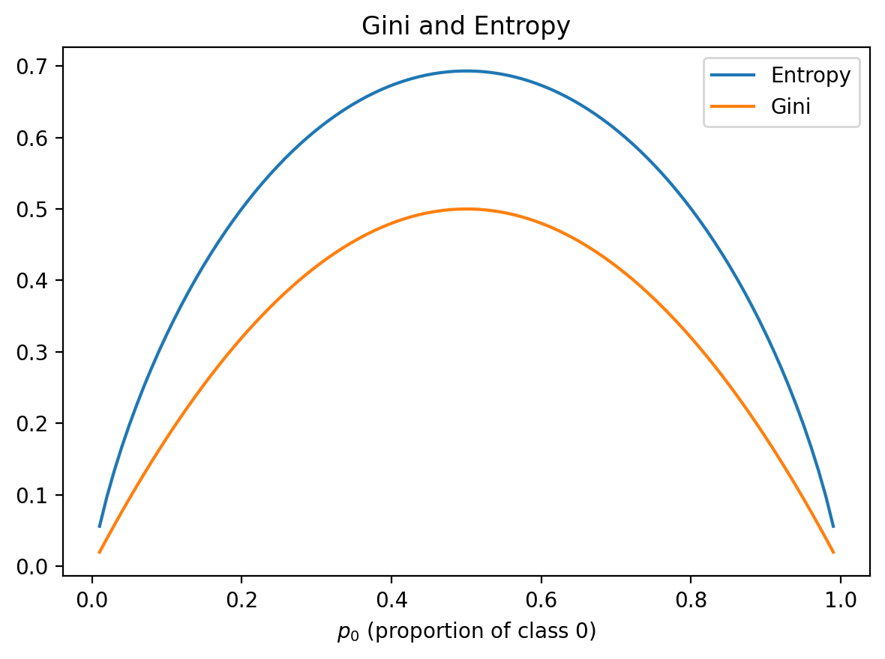

In a Jupyter environment, please rerun this cell to show the HTML representation or trust the notebook. On GitHub, the HTML representation is unable to render, please try loading this page with nbviewer.org.
To understand the parameters in a decision tree classifier, let’s explore how decision trees work under the hood.
A decision tree works by recursively splitting the data into two groups. At each split, it aims to create “purer” subsets - where one group has a higher concentration of the positive class (1s) and the other has more of the negative class (0s) compared to before the split.
Let’s look at a simple example: - Starting data: 100 samples total, evenly split with 50 class 0 and 50 class 1 - After splitting: - Left group: 40 samples, with 30 class 0 (75%) and 10 class 1 (25%) - Right group: 60 samples, with 20 class 0 (33%) and 40 class 1 (67%)
As we can see, both groups are now “purer” than the original 50-50 split. The left group is dominated by class 0 while the right group has more class 1 samples.
To quantify this purity, we use impurity measures that reach their maximum when classes are evenly split (50-50) and their minimum when one class completely dominates (100-0 or 0-100).
The two most common impurity measures are gini impurity and entropy, which we’ll explore next.
See Figure 1. Note that both measures are symmetric, achieving maximum at \(p_0=0.5\) (most impure) and minimum at \(p_0=1\) and \(p_0=1\) (completely pure).
This makes intuitive sense: a 50-50 split between classes represents maximum uncertainty, while having all samples from one class represents perfect purity.
Code
p0 = np.linspace(0.01, 0.99, 100)gini =2* p0 * (1- p0)entropy =-p0 * np.log(p0) - (1- p0) * np.log(1- p0)plt.figure(figsize=(6, 4.5))plt.plot(p0, entropy, label="Entropy")plt.plot(p0, gini, label="Gini")plt.legend()plt.xlabel("$p_0$ (proportion of class 0)")plt.title("Gini and Entropy")plt.show()

Figure 1: Gini and Entropy
Calculating Impurity
Let’s calculate Gini impurity for a concrete example.
Before split, with equal class proportions: \[2\times0.5\times0.5 = 0.5\]
After split into two nodes: \[\text{Left node}: 2\times0.75\times 0.25 = 0.375\]\[\text{Right node}: 2\times\frac{1}{3}\times \frac{2}{3} = \frac{4}{9} \approx 0.444\]
The split has resulted in two purer nodes compared to the original node, as both impurity values (0.375 and 0.444) are lower than the initial 0.5.
To quantify the overall improvement, we calculate the weighted average impurity after the split, where weights are proportional to the number of samples in each node:
The reduction in impurity (information gain) is then: \[\text{Gain} = I_{\text{before}} - I_{\text{split}}\]
Find the Optimal Split
Consider the following example dataset:
id
x
y
1
2
0
2
3
0
3
4
0
4
5
1
5
5
0
6
7
0
7
7
1
8
8
0
9
8
1
10
9
1
11
10
1
12
11
0
13
12
1
To find the optimal split point, we need to:
Consider all possible splits of the form \(x \leq \text{cutoff}\)
For each split:
Calculate impurity before split
Calculate weighted impurity after split
Compute impurity reduction (information gain)
Choose the split that maximizes information gain
With 13 data points and 10 unique x-values (2,3,4,5,7,8,9,10,11,12), we have 9 possible split points to evaluate.
After finding the best split on a single feature, we can continue recursively splitting the resulting nodes to build a complete decision tree. At each step, we:
Consider all available features
For each feature, find the optimal split point using the process above
Choose the feature and split point combination that gives the highest information gain
Split the node and repeat the process on the child nodes
We continue splitting until some stopping criterion is met, such as: - Maximum tree depth reached - Minimum number of samples in a node - No further improvement in impurity possible